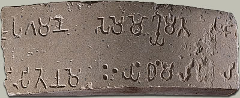

Ashoka fragmentThis is a fragment from a large pillar erected in the third century B.C. by the emperor Ashoka. The inscription is written in the Prakrit language using the Brahmi script. 
Ashoka was a powerful ruler who gained control over vast territories in ancient India through a series of bloody military campaigns. After a particularly difficult battle, Ashoka was struck by the horror and waste of war. He converted to Buddhism and followed the teachings of the Buddha for the rest of his life. Thus he followed a path of non-violent living and governing. In about 243 B.C. Ashoka called for over 30 pillars to be put up all over the areas he ruled. Each pillar was inscribed with edicts which covered many different aspects of life, belief and worship. |